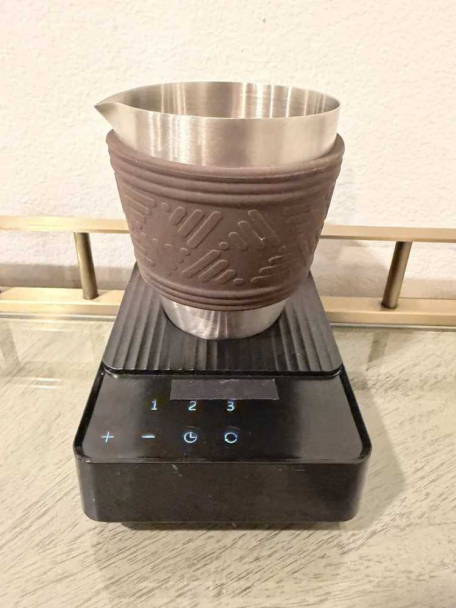

Craft
We honour a centuries-old practice with materials and engineering that earn their place beside it. Nothing decorative, nothing disposable.
We fell for the tradition long before we set out to refine it. Matcha Sous is our attempt to keep everything beautiful about the bowl, and quietly remove everything that gets in its way.
 The quiet hand at work
The quiet hand at work
Matcha Sous began in a small café where the morning rush met a bamboo whisk. The matcha was extraordinary, and impossibly inconsistent. One bowl sang; the next arrived grainy and grey. The difference was never the tea. It was the hurry.
I could never achieve that silky microfoam on my own. Not reliably, and never in a hurry.
We loved the calm of the ceremony: the sifting, the slow pour, the pause before the first sip. What we never wanted was to watch that beautiful practice slip out of reach on a rushed morning. So we asked a simple question. What if the bowl could stay within reach on those mornings, with everything we love about it intact?
The answer was a sous chef. Not a replacement for the tradition, but a quiet hand within it, ready for the mornings that move faster than ceremony allows.
Every decision, from the steel to the timing, answers to these.
We honour a centuries-old practice with materials and engineering that earn their place beside it. Nothing decorative, nothing disposable.
The first bowl and the four-hundredth should taste the same. For hospitality, repeatable results are the whole point.
Tools should lower the temperature of a morning, not raise it. A whisper-quiet drive and unhurried design keep the ceremony peaceful.
One cable, a small footprint, controls that wipe clean in a pass. We sweat the details you only notice when they are missing.
We could have moulded the vessel from plastic and saved on every unit. Instead we drew it from food-grade stainless steel, the alloy trusted in professional kitchens, with a seamless wall, etched 40–120 ml measures and a spout shaped for a clean pour.
The whisk never touches your hand. A contactless magnetic drive spins it from beneath the base, so there is no gearbox to wear and nothing fragile to replace. Backlit touch controls sit flush on the front, lighting up at a tap: three presets, eighteen speeds, and 6 W of quiet power behind them.

Stainless · contactless driveWe did not set out to make a gadget. We set out to give people the best bowl of their day, and then make it impossible to get wrong. If Matcha Sous earns a permanent place on your counter, we have done our job.The Matcha Sous team
Free US shipping, 30-day returns and a 1-year warranty.